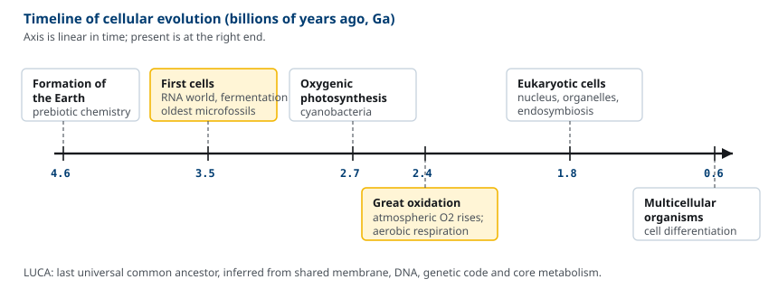
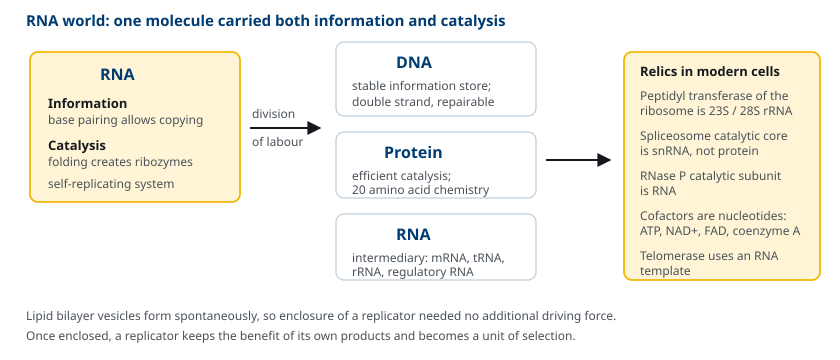
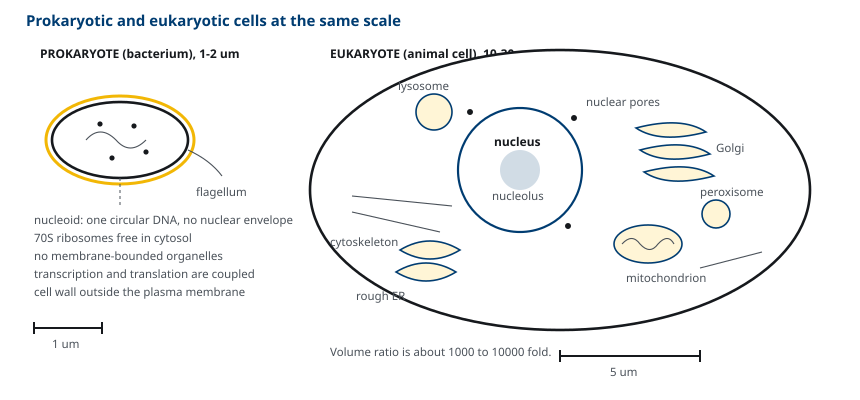
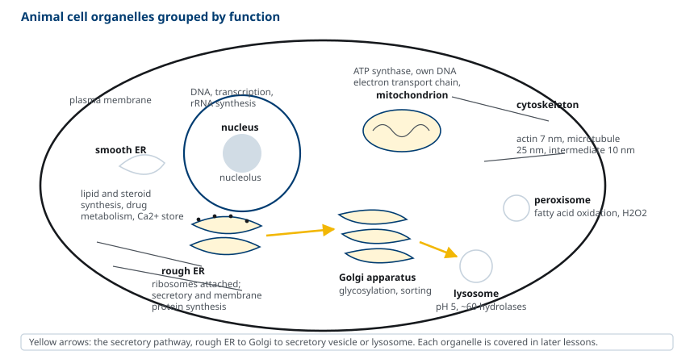
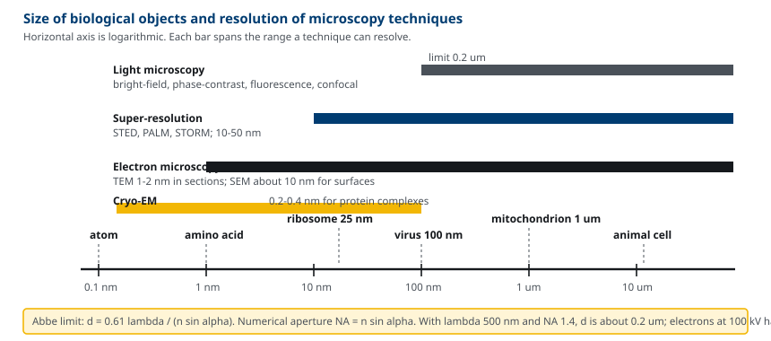
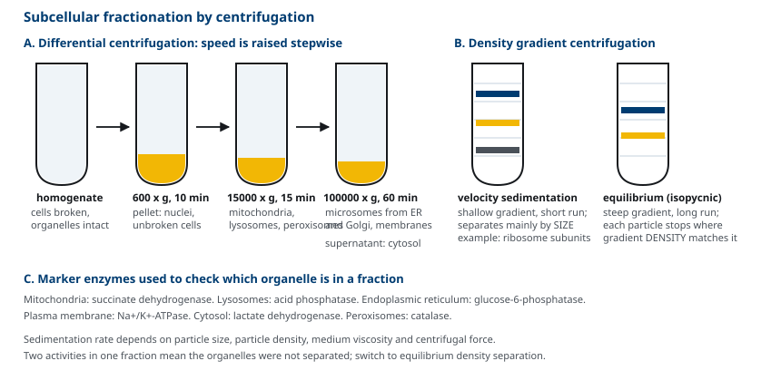

M01-W05-L01 · 인체일반생물학과 기초세포생물학
세포의 기원·진화와 세포 연구 방법
The Origin and Evolution of Cells, and Methods of Cell Study
학습목표
- 세포 이론의 내용과 모든 세포가 공유하는 네 가지 공통 속성을 설명한다.
- 화학적 진화에서 최초의 자기복제 체계가 등장하는 과정을 RNA world 가설로 설명한다.
- Prokaryotic 세포와 eukaryotic 세포를 크기, 구획화, 유전체 구성, 세포골격 측면에서 비교한다.
- Eukaryotic 세포소기관의 기능을 분비 경로와 에너지 대사 중심으로 정리하고 endosymbiosis 가설의 근거를 든다.
- 광학·형광·전자 현미경의 분해능을 결정하는 요인을 계산식으로 설명하고 관찰 대상에 맞는 기법을 고른다.
- 세포배양과 원심분리를 이용한 세포분획의 원리를 설명하고 각 분획에 어떤 소기관이 들어오는지 예측한다.
선수지식
- M01-W01~W04 인체 기관계 개요 — 조직과 기관이 세포로 이루어져 있다는 사실
- 고등학교 수준의 화학 — 공유결합, 산-염기, 농도와 용액
강의 구성
- 1. 세포 이론과 모든 세포의 공통 속성
- 2. 화학적 진화와 최초의 자기복제 체계
- 3. 대사의 진화와 세포의 분화
- 4. Prokaryotic 세포와 eukaryotic 세포의 비교
- 5. Eukaryotic 세포소기관의 개요
- 6. 실험 모델 생물의 선택
- 7. 현미경: 분해능의 한계와 관찰 기법
- 8. 세포배양과 원심분리를 이용한 세포분획
1. 세포 이론과 모든 세포의 공통 속성
생물학에서 세포(cell)는 스스로 복제할 수 있는 가장 작은 단위다. 19세기 중반에 정리된 세포 이론(cell theory)은 세 가지 주장으로 요약된다. 모든 생물은 세포로 이루어져 있고, 세포는 생명의 기본 구조·기능 단위이며, 세포는 이미 존재하는 세포의 분열로만 생긴다. 마지막 주장이 자연발생설을 부정하면서 생물학은 실험 과학이 되었다.
세균 한 마리와 사람의 신경세포는 크기가 1,000배 이상 다르지만 네 가지를 공유한다. 이 네 가지가 세포생물학이 통일된 학문으로 성립하는 근거다.
- 지질 이중층 막으로 둘러싸여 있다. 안과 밖의 조성이 다르게 유지되고, 무엇이 드나드는지를 세포가 선택한다.
- 유전정보를 DNA에 저장한다. 정보는 DNA → RNA → 단백질 방향으로 흐른다.
- 같은 유전암호를 쓴다. 61개 codon이 20종의 아미노산에 대응하는 대응표가 세균부터 사람까지 거의 동일하다.
- 대사의 중심 화학이 같다. ATP를 에너지 통화로 쓰고, glycolysis와 TCA cycle의 중간체가 동일하다.
이 공통성은 모든 현존 생물이 하나의 조상 세포 집단에서 갈라져 나왔다는 결론으로 이어진다. 이 가상의 조상을 last universal common ancestor(LUCA)라고 부른다.

세포의 크기에는 물리적 제약이 있다. 영양소와 산소는 확산으로 들어오고 폐기물은 확산으로 나가는데, 확산 시간은 거리의 제곱에 비례한다. 부피는 반지름의 세제곱으로 늘지만 표면적은 제곱으로만 늘기 때문에, 커질수록 단위 부피당 교환 면적이 줄어든다. 전형적인 세균은 지름 1~2 μm, 동물 세포는 10~30 μm에 머문다. 이 한계를 넘어선 세포들은 예외 없이 보완 장치를 갖추고 있다. 장 상피세포는 microvilli로 흡수 면적을 넓히고, 근육섬유는 핵을 여러 개 갖는다.
2. 화학적 진화와 최초의 자기복제 체계
세포가 생기기 전에 생체분자가 먼저 있어야 한다. 1953년 Stanley Miller는 물, 수소, methane, ammonia를 넣은 밀폐 용기에 전기 방전을 가해 일주일 만에 glycine, alanine을 비롯한 여러 아미노산이 생기는 것을 확인했다. 이 실험은 생체분자가 생물의 개입 없이 간단한 무기물에서 만들어질 수 있다는 것을 보였다. 이후 비슷한 조건에서 당, purine과 pyrimidine 염기, 지방산도 합성되었고, 탄소질 운석(Murchison meteorite)에서도 아미노산이 검출되었다.
다음 문제가 더 어렵다. 분자들이 있다고 해서 생명이 되지는 않는다. 자연선택이 작동하려면 스스로를 복제하면서 그 복제가 완벽하지 않은 분자가 필요하다. 복제가 있으면 수가 늘고, 오류가 있으면 변이가 생기고, 변이 중 복제를 더 잘하는 것이 남는다.
후보는 두 가지였다. 단백질은 촉매 능력이 뛰어나지만 자신의 서열 정보를 복제할 수단이 없다. DNA는 정보를 복제할 수 있지만 스스로 촉매하지 못한다. 1980년대에 ribozyme, 즉 촉매 활성을 가진 RNA가 발견되면서 이 교착이 풀렸다. *Tetrahymena*의 rRNA 전구체는 단백질 없이 자신의 intron을 잘라냈고, RNase P의 촉매 부위도 RNA였다.
RNA world 가설은 이렇게 정리된다. 최초의 자기복제 체계는 RNA였다. RNA는 염기쌍 상보성으로 정보를 복제할 수 있고, 접혀서 입체 구조를 만들어 촉매도 할 수 있다. 이후 더 효율적인 촉매인 단백질이 역할을 넘겨받고, 더 안정한 정보 저장체인 DNA가 정보를 넘겨받았다.
현존 세포에 남아 있는 흔적이 이 가설을 지지한다. 번역에서 peptide 결합을 실제로 만드는 peptidyl transferase 활성은 ribosome의 23S/28S rRNA에 있고 단백질이 아니다. Spliceosome의 촉매 부위도 snRNA이며, ATP, NAD⁺, FAD, coenzyme A 같은 핵심 보조인자는 모두 nucleotide 구조를 갖는다.

최초의 세포는 자기복제 RNA가 지질 이중층 소포 안에 갇힌 형태였을 것이다. 지질 이중층은 지방산이나 인지질을 물에 넣으면 외부 에너지 없이 자발적으로 형성되므로, 이 단계에 특별한 설명이 필요하지 않다. 막에 갇힌 복제체는 자신이 만든 산물의 이익을 독점하므로 선택의 단위가 된다.
3. 대사의 진화와 세포의 분화
최초의 세포는 주변의 유기물을 발효로 분해해 에너지를 얻었을 것이다. Glycolysis가 모든 생물에 보존되어 있고 산소를 쓰지 않으며 세포질에서 일어난다는 점이 이 추정의 근거다. 그러나 유기물은 유한하므로 공급이 곧 한계가 된다.
이 한계를 깬 것이 photosynthesis다. 빛 에너지로 CO₂를 유기물로 고정하면 에너지와 탄소를 스스로 공급할 수 있다. 초기 광합성 세균은 H₂S를 전자공여체로 썼고, 이후 cyanobacteria가 물을 전자공여체로 쓰는 산소 발생 광합성을 획득했다. 물은 어디에나 있으므로 이 전환은 생산력을 크게 늘렸고, 부산물인 O₂가 약 24억 년 전부터 대기에 축적되었다(great oxidation event).
O₂의 축적은 두 가지 결과를 낳았다. 반응성이 큰 O₂는 기존 혐기성 생물에게 독이었다. 동시에, O₂를 최종 전자수용체로 쓰는 oxidative phosphorylation이 가능해졌다. 포도당 한 분자에서 발효는 ATP 2분자를 얻지만 산소를 쓰는 완전 산화는 약 30분자를 얻는다. 15배의 에너지 수확 차이가 이후 모든 복잡한 생물의 토대가 되었다.
| 대사 양식 | 전자공여체 | 최종 전자수용체 | 포도당 1분자당 ATP | 등장 시기(추정) |
|---|---|---|---|---|
| 발효(glycolysis만) | 유기물 | 유기물(pyruvate 등) | 2 | 가장 이른 시기 |
| 혐기성 광합성 | H₂S, H₂ | — (CO₂ 고정) | — | 약 33억 년 전 |
| 산소 발생 광합성 | H₂O | — (CO₂ 고정) | — | 약 27억 년 전 |
| Oxidative phosphorylation | 유기물 | O₂ | 약 30 | 약 24억 년 전 이후 |
4. Prokaryotic 세포와 eukaryotic 세포의 비교
현존 생물은 세 영역(domain)으로 나뉜다. Bacteria, Archaea, Eukarya다. 앞의 둘은 핵막이 없어 prokaryote로 묶이지만, archaea는 DNA 복제·전사·번역 기구가 eukaryote에 더 가깝다. 즉 prokaryote는 하나의 계통이 아니라 핵이 없다는 공통점으로 묶인 두 계통이다.
| 항목 | Prokaryote | Eukaryote |
|---|---|---|
| 지름 | 1~2 μm | 10~100 μm |
| 부피 | 약 1 μm³ | 1,000~10,000 μm³ |
| 핵막 | 없음(nucleoid) | 있음 |
| 유전체 | 환상 DNA 1개, 약 0.5~10 Mb | 선형 염색체 여러 개, 12 Mb~3,000 Mb |
| 유전자 수 | 약 500~5,000 | 약 6,000~25,000 |
| Intron | 거의 없음 | 많음 |
| Ribosome | 70S (50S + 30S) | 80S (60S + 40S) |
| 막성 소기관 | 없음 | 있음 |
| 세포골격 | 상동 단백질 존재(FtsZ, MreB) | actin, tubulin, 중간섬유 |
| 전사와 번역 | 같은 공간에서 동시에 | 핵에서 전사, 세포질에서 번역 |
표에서 가장 중요한 차이는 구획화(compartmentalization)다. Prokaryote는 하나의 공간에서 모든 반응이 일어나므로 조건이 서로 다른 반응을 동시에 진행하기 어렵다. Eukaryote는 막으로 공간을 나누어 lysosome 안은 pH 5로, 세포질은 pH 7.2로 유지하고, 미토콘드리아 막 사이 공간에는 양성자를 축적한다. 구획화는 또한 전사와 번역을 분리하는데, 이 분리가 RNA 가공(splicing, capping, polyadenylation)과 그 수준의 유전자 발현 조절을 가능하게 했다.

Eukaryote의 유전체는 크지만 유전자 수의 증가는 그만큼 크지 않다. 사람 유전체 3,200 Mb 중 단백질 암호화 부위는 2% 미만이다. 즉 복잡성의 증가는 유전자 개수보다 조절 서열, intron, 반복 서열의 증가에 있다.
5. Eukaryotic 세포소기관의 개요
Eukaryotic 세포의 소기관은 기능으로 묶으면 네 군이다. 이 구분은 뒤의 수업에서 각 소기관을 자세히 다룰 때의 지도가 된다.
(1) 유전정보 — nucleus 핵막은 이중막이고 nuclear pore complex가 박혀 있어 RNA와 단백질의 출입을 선택한다. 내부의 nucleolus에서 rRNA가 전사되고 ribosome 소단위가 조립된다.
(2) 분비 경로 — rough ER, smooth ER, Golgi apparatus, lysosome Ribosome이 붙어 있는 rough ER에서 분비 단백질과 막단백질이 합성되면서 ER 내부로 들어간다. Ribosome이 없는 smooth ER은 지질과 steroid를 합성하고 약물을 대사하며, 근육에서는 변형된 형태(sarcoplasmic reticulum)로 Ca²⁺를 저장한다. Golgi apparatus는 당 사슬을 다듬고 단백질을 목적지별로 분류한다. Lysosome은 내부 pH가 약 5이고 약 60종의 가수분해효소를 담아 거대분자를 분해한다. Peroxisome은 긴 지방산의 β-oxidation과 H₂O₂ 처리를 맡는다.
(3) 에너지 — mitochondrion, chloroplast 미토콘드리아는 이중막이고, 내막이 접혀 cristae를 이루어 표면적을 넓힌다. 내막에 electron transport chain과 ATP synthase가 있다. 식물의 chloroplast도 이중막 구조에 thylakoid 막을 갖는다.
(4) 구조와 운동 — 세포골격 Actin 필라멘트(지름 7 nm)는 세포 표면 모양과 운동을, microtubule(25 nm)은 소기관 운반과 염색체 분리를, 중간섬유(10 nm)는 기계적 강도를 담당한다.

미토콘드리아와 chloroplast는 endosymbiosis로 생겼다는 설명을 받아들인다. 근거는 다음과 같다. 두 소기관은 자신의 환상 DNA와 70S 유사 ribosome을 갖고, 이중막 중 내막의 지질 조성이 세균 막과 비슷하며, 세포 분열과 무관하게 스스로 분열하고, 세균 단백질 합성 억제제인 chloramphenicol에 미토콘드리아 번역이 억제된다. rRNA 서열 분석은 미토콘드리아가 α-proteobacteria에, chloroplast가 cyanobacteria에 가장 가깝다는 결과를 준다.
6. 실험 모델 생물의 선택
세포생물학의 발견은 대부분 사람이 아닌 생물에서 나왔다. 모델 생물을 쓰는 이유는 세포의 기본 기구가 보존되어 있어 한 생물에서 얻은 결론이 다른 생물로 옮겨지기 때문이다. Cyclin과 cyclin-dependent kinase는 효모와 불성게에서 발견되었고 사람의 세포주기 조절에 그대로 적용되었다.
| 모델 생물 | 특징 | 세대 시간 | 주요 기여 |
|---|---|---|---|
| Escherichia coli | 유전체 4.6 Mb, 4,300 유전자 | 20분 | DNA 복제, 전사, 번역, 유전자 조절의 기본 기구 |
| Saccharomyces cerevisiae | 가장 단순한 eukaryote, 12 Mb | 2시간 | 세포주기, 분비 경로, 전사 조절 |
| Caenorhabditis elegans | 성체 체세포 959개, 계보가 전부 확정됨 | 3일 | programmed cell death, 발생 계보 |
| Drosophila melanogaster | 유전학 도구가 풍부 | 10일 | 체축 형성, 신호전달 경로 |
| Danio rerio(zebrafish) | 배아가 투명하고 체외 발생 | 3개월 | 척추동물 기관 형성의 실시간 관찰 |
| Mus musculus | 포유류, 유전자 조작 가능 | 2개월 | 면역, 질환 모델, 유전자 기능 검증 |
| Arabidopsis thaliana | 작은 식물 유전체 | 2개월 | 식물 발생, 호르몬 신호 |
선택 기준은 질문에 따라 다르다. 보존된 기본 기구를 보려면 세대 시간이 짧고 유전학이 쉬운 생물을, 기관 수준의 통합을 보려면 사람과 가까운 생물을 쓴다. 사람 세포가 꼭 필요한 질문에는 배양 세포와 사람 유도만능줄기세포(induced pluripotent stem cell)를 쓴다.
7. 현미경: 분해능의 한계와 관찰 기법
세포는 눈으로 보이지 않으므로 세포생물학은 현미경과 함께 발전했다. 핵심 개념은 배율이 아니라 분해능(resolution), 즉 두 점을 서로 다른 두 점으로 구분할 수 있는 최소 거리다. Abbe의 식으로 정해진다.
d = 0.61 λ / (n sin α)
여기서 λ는 쓰는 빛의 파장, n은 시료와 렌즈 사이 매질의 굴절률, α는 렌즈가 빛을 받아들이는 반각이다. n sin α를 수치구경(numerical aperture, NA)이라 한다. 가시광선(λ ≈ 500 nm)과 기름 침지 대물렌즈(NA ≈ 1.4)를 쓰면 d는 약 0.2 μm다. 배율을 아무리 올려도 이보다 가까운 두 점은 하나로 보인다. 빛의 파장이 한계를 정하기 때문이다.
전자는 파장이 훨씬 짧다. 100 kV로 가속한 전자의 파장은 약 0.004 nm이고, 렌즈 수차 때문에 실제 분해능은 생물 시료에서 약 1~2 nm에 머문다. 그래도 광학 현미경보다 100배 이상 좋다.
| 기법 | 분해능 | 살아 있는 세포 | 주된 용도 |
|---|---|---|---|
| 명시야(bright-field) | 0.2 μm | 가능 | 염색한 조직, 세포 형태 |
| 위상차(phase-contrast), 미분간섭(DIC) | 0.2 μm | 가능 | 염색 없이 살아 있는 세포 관찰 |
| 형광(fluorescence) | 0.2 μm | 가능 | 특정 분자의 위치 |
| 공초점(confocal) | 측방 0.2 μm, 축방 0.5 μm | 가능 | 두꺼운 시료의 광학적 절단면 |
| 초고분해능(STED, PALM/STORM) | 10~50 nm | 제한적으로 가능 | 단백질 복합체 배치 |
| 투과전자(TEM) | 1~2 nm | 불가 | 소기관 내부 구조 |
| 주사전자(SEM) | 약 10 nm | 불가 | 표면 입체 형태 |
| Cryo-electron microscopy | 0.2~0.4 nm | 불가 | 단백질 복합체의 원자 수준 구조 |
형광 현미경이 현대 세포생물학의 중심 도구다. 형광 분자는 특정 파장의 빛을 흡수하고 더 긴 파장의 빛을 내므로, 여기 광과 방출 광을 필터로 분리하면 표지된 분자만 밝게 보인다. 표지 방법은 두 가지다. 항체에 형광색소를 붙여 고정한 세포를 염색하는 immunofluorescence, 그리고 관심 단백질의 유전자에 green fluorescent protein(GFP) 서열을 이어 붙여 세포가 형광 단백질을 직접 만들게 하는 방법이다. 후자는 살아 있는 세포에서 단백질의 이동을 실시간으로 추적할 수 있게 했다.
전자 현미경은 진공에서 작동하므로 시료를 고정·탈수해야 하고 따라서 살아 있는 세포를 볼 수 없다. TEM은 약 50~100 nm 두께의 절편을 전자가 통과하게 하고 중금속(osmium, uranium)으로 대조를 만든다. Cryo-EM은 시료를 급속 냉동해 유리질 얼음에 가두므로 화학 고정과 염색에서 오는 변형을 피하고, 수천 장의 입자 영상을 계산으로 평균해 원자 수준 구조를 얻는다.

8. 세포배양과 원심분리를 이용한 세포분획
구조를 보는 것만으로는 기능을 알 수 없다. 기능을 알려면 세포를 다룰 수 있어야 하고, 성분을 분리해 시험관에서 반응을 재현할 수 있어야 한다.
세포배양(cell culture) 동물 세포는 혈청, 아미노산, 비타민, 포도당, 완충액을 넣은 배지에서 37°C, 5% CO₂ 조건으로 기른다. 조직에서 바로 떼어낸 1차 배양 세포는 분열 횟수에 한계가 있어 약 50~60회 분열한 뒤 멈춘다(replicative senescence). 변이로 이 한계를 넘어 무한히 자라게 된 세포 집단을 세포주(cell line)라 한다. HeLa, HEK293, CHO가 널리 쓰인다. 세포주는 다루기 쉬운 대신 원래 조직의 성질을 일부 잃는다.
배양의 장점은 조건을 통제할 수 있다는 점이다. 배지에 성장인자 한 가지만 넣거나 빼서 그 인자의 효과를 분리할 수 있고, 유전자를 넣거나 꺼서 표현형 변화를 볼 수 있다. 다만 배양 접시의 2차원 환경은 조직의 3차원 환경과 다르므로, 결론을 조직으로 옮길 때는 검증이 필요하다.
세포분획(subcellular fractionation) 소기관을 분리하는 절차는 두 단계다.
1. 파쇄(homogenization) 저장액에서 세포를 부풀린 뒤 Dounce homogenizer나 초음파로 세포막을 깬다. 핵과 소기관의 막은 온전하게 남겨야 하므로 세기를 조절한다. 2. 원심분리(centrifugation) 입자가 가라앉는 속도는 크기, 밀도, 매질의 점성, 원심력으로 정해진다. 큰 것과 무거운 것이 먼저 가라앉는다.
차등 원심분리(differential centrifugation)는 회전 속도를 단계적으로 올리며 침전물을 차례로 얻는다.
| 단계 | 조건(대략) | 침전물 |
|---|---|---|
| 1 | 600 × g, 10분 | 핵, 깨지지 않은 세포 |
| 2 | 15,000 × g, 15분 | 미토콘드리아, lysosome, peroxisome |
| 3 | 100,000 × g, 60분 | 소포체·Golgi 유래 microsome, 세포막 조각 |
| 4 | 상층액 | 세포질 가용성 단백질, ribosome 일부 |
차등 원심분리만으로는 크기와 밀도가 비슷한 소기관이 섞여 나온다. 이때 밀도구배 원심분리(density gradient centrifugation)를 쓴다. sucrose나 Percoll로 밀도가 아래로 갈수록 높아지는 구배를 만들고 그 위에 시료를 얹는다. 두 방식이 있다.
- 속도 침강(velocity sedimentation): 얕은 구배에서 짧게 돌려 침강 속도 차이, 즉 주로 크기 차이로 분리한다. Ribosome 소단위 분리에 쓴다.
- 평형 침강(isopycnic/equilibrium sedimentation): 급한 구배에서 오래 돌려 각 입자가 자신의 밀도와 같은 지점에 멈추게 한다. 크기와 무관하게 밀도로만 분리된다.
분획이 제대로 되었는지는 표지 효소(marker enzyme) 활성으로 확인한다. 미토콘드리아에는 succinate dehydrogenase, lysosome에는 acid phosphatase, 소포체에는 glucose-6-phosphatase, 세포막에는 Na⁺/K⁺-ATPase가 들어 있다. 어떤 분획에서 특정 표지 효소 활성이 나오면 그 소기관이 섞여 있다는 뜻이다.

확인 문항
어떤 연구자가 배율 5,000배의 광학 현미경을 제작해 ribosome(지름 약 25 nm)을 관찰하려 한다. 가능한지 판단하고 근거를 들어라.
해설
불가능하다. 광학 현미경의 분해능은 Abbe의 식 d = 0.61λ/(n sin α)로 정해지며, 가시광선(λ ≈ 500 nm)과 기름 침지 대물렌즈(NA ≈ 1.4)를 써도 약 0.2 μm, 즉 200 nm가 한계다. Ribosome의 25 nm는 이보다 8배 작으므로 배율을 올려도 상이 흐려질 뿐 두 점으로 구분되지 않는다(empty magnification). 분해능은 빛의 파장이 정하므로 파장이 약 0.004 nm인 전자를 쓰는 전자 현미경이 필요하다.
미토콘드리아가 세균에서 유래했다는 endosymbiosis 가설을 지지하는 근거를 구조, 유전체, 생화학 측면에서 각각 하나씩 들어라.
해설
구조 측면에서, 미토콘드리아는 이중막이고 내막의 지질 조성이 세균 막에 가깝다. 이는 숙주 세포가 세균을 삼킬 때 외막은 숙주 유래, 내막은 세균 유래로 남은 결과로 설명된다. 유전체 측면에서, 미토콘드리아는 자신의 환상 DNA와 70S에 가까운 ribosome을 가지며 rRNA 서열이 α-proteobacteria와 가장 가깝다. 생화학 측면에서, 세균 ribosome을 겨냥하는 chloramphenicol이 미토콘드리아 단백질 합성을 억제하지만 세포질 번역은 억제하지 않는다.
어떤 세포 분획에서 acid phosphatase 활성과 succinate dehydrogenase 활성이 함께 검출되었다. 이것이 의미하는 바와 분리를 개선할 방법을 설명하라.
해설
Acid phosphatase는 lysosome의 표지 효소이고 succinate dehydrogenase는 미토콘드리아의 표지 효소다. 두 활성이 같은 분획에 있다는 것은 두 소기관이 분리되지 않고 섞였다는 뜻이다. 차등 원심분리는 침강 속도, 즉 주로 크기에 따라 분리하는데 lysosome(0.2~0.5 μm)과 미토콘드리아(0.5~1 μm)는 침강 속도가 비슷하기 때문이다. 개선 방법은 밀도구배 평형 침강이다. 두 소기관의 밀도가 다르므로 sucrose나 Percoll 구배에서 오래 원심분리하면 각각 자신의 밀도와 같은 위치에 멈춰 분리된다.
RNA world 가설이 "단백질이 먼저 생겼다" 또는 "DNA가 먼저 생겼다"는 대안보다 설득력을 얻는 이유를 설명하라.
해설
자연선택이 시작되려면 하나의 분자가 정보 복제와 촉매를 동시에 할 수 있어야 한다. 단백질은 촉매 능력이 뛰어나지만 자신의 아미노산 서열을 주형으로 복제할 수단이 없으므로 변이가 후대로 전달되지 않는다. DNA는 상보적 염기쌍으로 복제되지만 촉매 활성이 거의 없어 복제를 수행할 효소가 이미 있어야 한다. RNA는 염기쌍 상보성으로 정보를 복제할 수 있고 접혀서 ribozyme으로 촉매도 하므로 두 요건을 동시에 만족한다. 현존 세포에 남은 흔적도 이를 지지한다. Ribosome의 peptidyl transferase 활성과 spliceosome의 촉매 부위가 RNA이고, 주요 보조인자가 nucleotide 구조를 갖는다.
산소 발생 광합성의 등장이 이후 생물 진화에 미친 영향을 에너지 수확 측면에서 설명하라.
해설
Cyanobacteria가 물을 전자공여체로 쓰는 광합성을 획득하면서 부산물 O₂가 대기에 축적되었다. O₂는 전자친화도가 높아 좋은 최종 전자수용체가 되므로, 유기물을 CO₂까지 완전히 산화하는 oxidative phosphorylation이 가능해졌다. 발효는 포도당 1분자에서 ATP 2분자를 얻는 반면 산소를 쓰는 완전 산화는 약 30분자를 얻어 약 15배 차이가 난다. 이 에너지 수확의 증가가 eukaryotic 세포의 큰 부피와 많은 소기관, 이어 다세포 생물의 유지 비용을 감당할 수 있게 했다. 반면 반응성이 큰 O₂는 기존 혐기성 생물에게 독성으로 작용해 서식지를 제한했다.
1차 배양 세포 대신 HeLa 같은 세포주를 쓰는 이유와, 그 결과를 조직으로 옮길 때 주의할 점을 설명하라.
해설
1차 배양 세포는 약 50~60회 분열한 뒤 replicative senescence로 증식을 멈추므로 장기 실험과 반복 실험에 쓰기 어렵다. 세포주는 변이로 이 한계를 넘어 무한히 증식하므로 균일한 세포를 계속 공급할 수 있고 유전자 조작도 쉽다. 그러나 세포주는 무한 증식을 가능하게 한 변이를 이미 갖고 있어 원래 조직의 유전체와 발현 양상에서 벗어나 있으며, 조직 특이적 기능을 잃는 경우가 많다. 또한 배양 접시의 2차원 환경에는 조직의 세포외기질과 이웃 세포 신호가 없다. 따라서 세포주에서 얻은 결론은 1차 배양 세포, 3차원 배양 또는 동물 모델에서 재확인해야 한다.
참고문헌
- Cooper GM, Adams K. The Cell: A Molecular Approach. 9th ed. Oxford University Press; 2022. Chapter 1, An Overview of Cells and Cell Research.
- Alberts B, Heald R, Johnson A, et al. Molecular Biology of the Cell. 7th ed. W.W. Norton; 2022. Chapter 1, Cells and Genomes.
- Miller SL. A production of amino acids under possible primitive earth conditions. Science 1953;117:528–529.
- Cech TR. The RNA worlds in context. Cold Spring Harb Perspect Biol 2012;4:a006742.
- de Duve C. The lysosome turns fifty. Nat Cell Biol 2005;7:847–849.
- Lichtman JW, Conchello JA. Fluorescence microscopy. Nat Methods 2005;2:910–919.
- Gray MW, Burger G, Lang BF. Mitochondrial evolution. Science 1999;283:1476–1481.